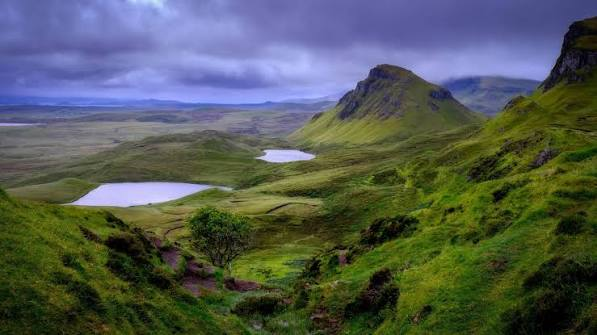

1. Saving Electricity
Turning off gas, and water switches helps the Earth by saving natural resources and stopping pollution. Turning off gas heaters and stoves stops the burning of fossil fuels, which keeps harmful gases out of the air and helps slow down global warming. At the same time, turning off taps and fixing leaks saves water, which means local water plants use less electricity to pump, clean, and heat it. By using less of both, we help keep our rivers and lakes full and protect the homes of wild animals.
2. Reduce, Reuse and Recycle (The three R's
The Three Rs—Reduce, Reuse, and Recycle—help save our land by keeping waste out of overflowing landfills. Reducing means buying less so we create less trash from the start. Reusing means finding new ways to use old items, like turning a glass jar into a storage container instead of throwing it away. Recycling takes materials like paper, plastic, and metal and turns them into brand-new products. Together, these steps protect natural spaces, keep harmful trash from polluting the soil, and preserve the earth for trees, wildlife, and future generations.
3. Reducing plastic waste
To protect the planet from plastic pollution, we need to focus on tackling the plastic crisis at its source and cleaning up what is already there. Choosing biodegradable alternatives made from bamboo, wood, or seaweed stops synthetic materials from polluting the earth in the first place. Supporting stricter laws on plastic production, such as single-use bans, forces companies to use cleaner packaging. Finally, joining community cleanups physically removes trash from parks, beaches, and soils before it breaks down into toxic microplastics that poison our food and water supplies
